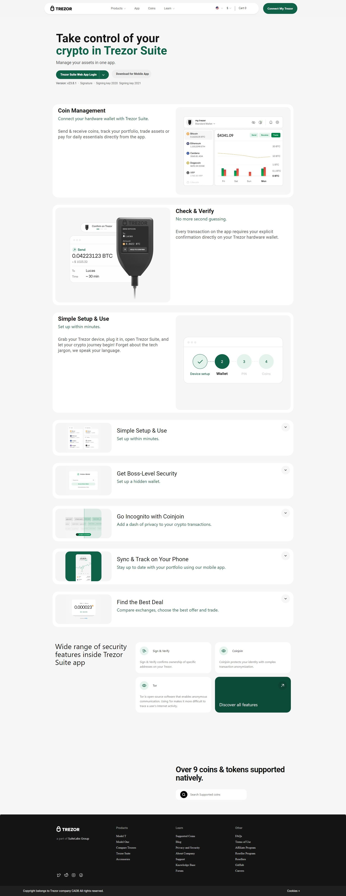

Trezor @Login. The official wallet | Trezor®
Logging into Trezor
- Connect Your Trezor Device: Plug your Trezor hardware wallet into your computer using a USB cable.
- Open Trezor Wallet Interface: Navigate to the Trezor Wallet web interface at trezor.io/start in your browser.
- Enter PIN: On your Trezor device, enter your PIN. This is a security measure to protect your device from unauthorized access.
- Confirm on Device: Confirm any actions or prompts on your Trezor device screen to proceed.
- Access Your Wallet: Once authenticated, you'll have access to your Trezor wallet, where you can manage your cryptocurrencies securely.